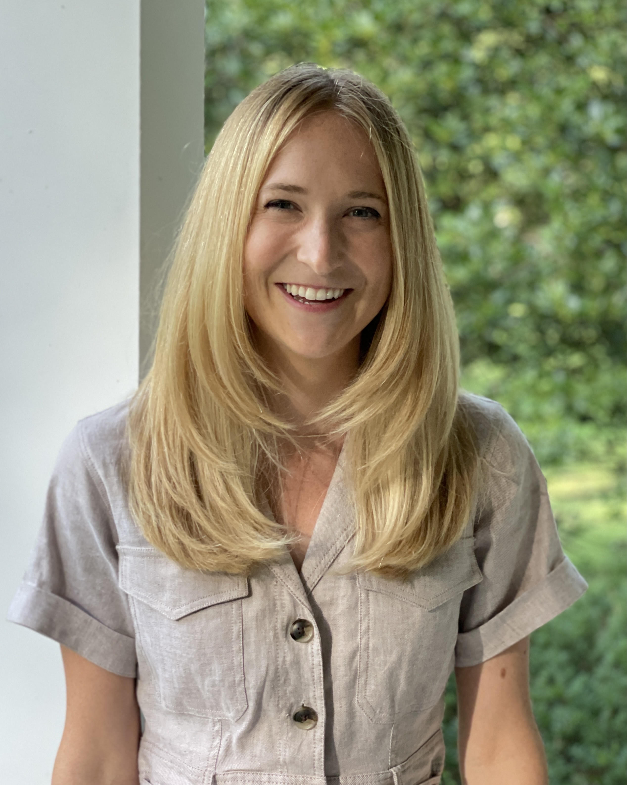

Ph.D. Student · Earth & Environmental Engineering
Columbia University · DOE CSGF Fellow
I'm a PhD student, co-advised by Prof. Robert Pincus and Prof. Pierre Gentine, and a researcher with the NSF LEAP (Learning the Earth with Artificial Intelligence and Physics) Science and Technology Center.
My research focuses on improving how Earth System Models represent cloud processes, using machine learning and physics-based approaches. Current projects include understanding how cloud shape and the sun's angle control errors in how models calculate solar radiation, and investigating how cloud shadows drive turbulence in the lower atmosphere using GPU-accelerated simulations and DOE ARM observations.
Previously I was a Climate Impact Data Scientist at Gro Intelligence and a Research Analyst at Industrial Economics, Inc. I received my A.B. in Earth and Planetary Sciences from Harvard College in 2019.

Atmospheric models treat radiative transfer as a 1D process, introducing systematic errors. We show these errors are primarily controlled by cloud geometry and solar angle, with cloud cover, aspect ratio, and transmissivity governing the sign and magnitude of the bias.
As part of the NSF LEAP (Learning the Earth with Artificial Intelligence and Physics) Science and Technology Center, I collaborate on developing machine learning approaches that respect physical constraints for improving Earth System Model representations of clouds and climate.
Exploring how cloud shadows alter the surface energy budget and feed back on cloud formation, depth, and organization using large-eddy simulation.
My CV includes full details on education, research experience, publications, and technical skills.
Download CV (PDF)